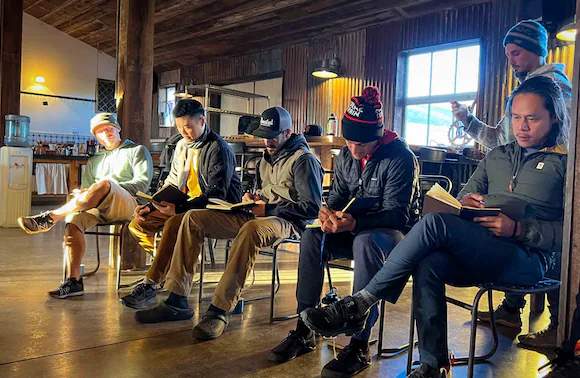
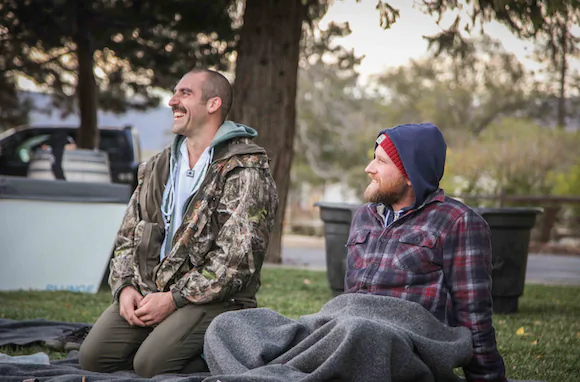

B940 · Tap into the magic inside you {first_name}
Hi {first_name},
I wanted to take a moment today to emphasize the profound impact that questions can have in ANY conversation.
The art of asking the right questions cannot be understated, as it holds a unique power in fostering understanding, curiosity, and tends to be more disarming by nature.
Questions possess a feminine energy, characterized by their inviting and undefended nature. They create a space for exploration and inner discovery, allowing individuals to delve into their thoughts and emotions.
 On the other hand, statements carry a more assertive, masculine energy, often placing us in a defensive stance.
I invite you to reflect on a past experience when a family member genuinely posed a question during a conversation that held great importance or an emotional charge.
Do you recall how that felt?
What emotions and thoughts arose within you?
In contrast, can you recall a time when that same family member simply told you what to do.
Did you notice how much easier or quicker it was to become defensive in the face of statements?
This is precisely why, in the coaching process, questions are invaluable - especially when they are from a heart-centered place, and guided skillfully.
While statements do have their place, particularly in consulting roles, coaching focuses on empowering individuals to arrive at their own conclusions.
By asking the right questions, we unlock the doors to our subconscious and unconscious minds, revealing a treasure chest of insight.
 Allow me to share a simple practice that has aided me in processing challenges in a more productive way, rather than getting caught in the loop of dwelling on the past:
While these questions themselves can be life-changing, their potency is greatly influenced by our state of mind when answering them.
If we approach them when we are busy or distracted, for instance, we may not receive the answers we seek. Therefore, I recommend creating a supportive environment for introspection before diving into these inquiries.
This could involve:
In the upcoming Path to Inspired Action Program, we harness the power of questions throughout to guide you towards your own answers.
I want to emphasize that my role as a coach is not to tell you what I think you should do. That would be both arrogant and disrespectful, assuming that I possess greater knowledge of how you should live your life, which I certainly do not.
If you are interested in embarking on a transformative journey to uncover your true desires and learn how to take continual inspired action, I encourage you to click here to learn more about the program and apply today - spots are limited to 12 total.
The Path to Inspired Action is a small group men's experience, conducted virtually, and incorporates powerful tools and techniques that I have honed over the years as a dedicated student and coach.
I wish you a fulfilling and productive day ahead,
Warm regards, Mike
P.S. Early discounted pricing ends at the end of July, so if you are feeling the call, I highly suggest checking it out here today. |